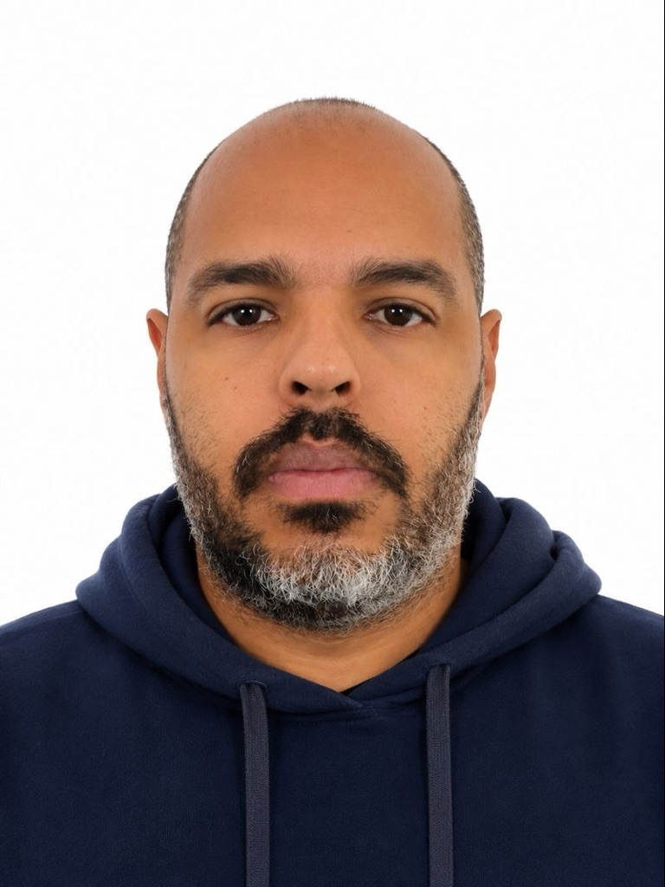

ATUAL · NOV 2025
Pré-Vendas
VIWSEC
Apresentação de soluções e serviços de segurança: Cato Networks, SentinelOne, KnowBe4, SecurityScorecard, Pentest e SOC. Elaboração de propostas, cotações e apresentações comerciais.
PORTFÓLIO PROFISSIONAL · 2026
Especialista com mais de 15 anos em tecnologia e pré-vendas de cibersegurança, conectando arquitetura, negócio e resultados.

01 / CAMINHO PROFISSIONAL
ATUAL · NOV 2025
VIWSEC
Apresentação de soluções e serviços de segurança: Cato Networks, SentinelOne, KnowBe4, SecurityScorecard, Pentest e SOC. Elaboração de propostas, cotações e apresentações comerciais.
DEZ 2024 — 2025
DMK3
Soluções de segurança com SolarWinds, Forcepoint e Sangfor; composição de propostas, cotações e apresentações de portfólio.
MAI 2023 — NOV 2024
CLM SOFTWARE
Propostas, cotações, POCs, implementação e treinamento para parceiros nos portfólios Hillstone, Netskope, Arista, A10 e Cato Networks.
JUN 2021 — ABR 2023
AGIS DISTRIBUIDOR
Atuação com Hillstone e Aruba, elaboração de propostas e treinamento de canais de cybersecurity.
DEZ 2020 — ABR 2021
TEMPEST SECURITY
Pré-vendas de Forcepoint, Check Point, CyberArk e Netskope, além de serviços de Pentest e SOC.
JAN — SET 2020
HILLSTONE NETWORKS
Suporte técnico e comercial a revendas e distribuidores, treinamentos, propostas e apoio ao pós-vendas.
2018 — 2019
MULTIREDE INFORMÁTICA
Segurança com A10, Cisco, Fortinet, Arbor, Sophos e Netskope, com foco em propostas e cotações.
JUL 2015 — AGO 2016
BROADTEC TECNOLOGIA
Consultoria de vendas e serviços com Palo Alto Networks, Arista, AeroHive, A10, SilverPeak, Nuage Networks e cabeamento estruturado certificado.
2016 — 2018
5F SOLUÇÕES EM TI
Apresentações, treinamentos, projetos e dimensionamentos das soluções Cisco, Sophos, WatchGuard e Forcepoint.
FEV 2012 — JUN 2015
ALLIER TECNOLOGIA
Pré-vendas de Meraki, WatchGuard, Fortinet, Fluke e Palo Alto; apresentações, treinamentos e administração da infraestrutura interna.
2009 — 2012
CLM SOFTWARE
Apresentação e dimensionamento de soluções WAN, firewall, IPS/IDS, antispam, filtro web e balanceamento de carga.
JUL 2006 — MAR 2007
7COMM CONSULTORIA
Supervisão de operação no Grupo SHC (Citroën do Brasil) e implementação de Windows Server 2003, ISA Server 2006 e ERP na TransMaq.
OUT 2001 — JUN 2006
DIRECTNET / NEOVIA
Evolução de manutenção de micro para administração de servidores Windows 2003 e Linux/OpenBSD e, depois, operação de NOC para rede corporativa.
JAN — SET 2001
PLURIS MÍDIA / XEROX BRASIL
Agendamento técnico e comercial no projeto Xerox WebGenesis Brasil, com oferta de links de internet e MPLS wireless.
SET — OUT 2000
MATRIX INTERNET
Venda de linhas LP de dados para pequenas e médias empresas.
CURRÍCULO COMPLETO / PERFIL
Proteção de ativos, gestão de riscos e ambientes resilientes.
Soluções que alinham tecnologia, negócio e experiência do cliente.
Produtos digitais e automações construídos para escalar.
03 / CONHECIMENTO EM MOVIMENTO
FORMAÇÃO
FATEC · Em andamento
UNICID
Colégio Eniac · Concluído
Ver LinkedIn →2025
2024
2021
2020
2018
2016
2014—2016
2009—2013
2006—2010
EXTRAS
VIVÊNCIA INTERNACIONAL
Em março de 2011, realizei um intercâmbio cultural de 30 dias em San Francisco, Califórnia, com curso certificado pela EC English School.
SAN FRANCISCO · CALIFÓRNIA · EUA
04 / PORTFÓLIO
Iniciativas que unem profundidade técnica e impacto real.